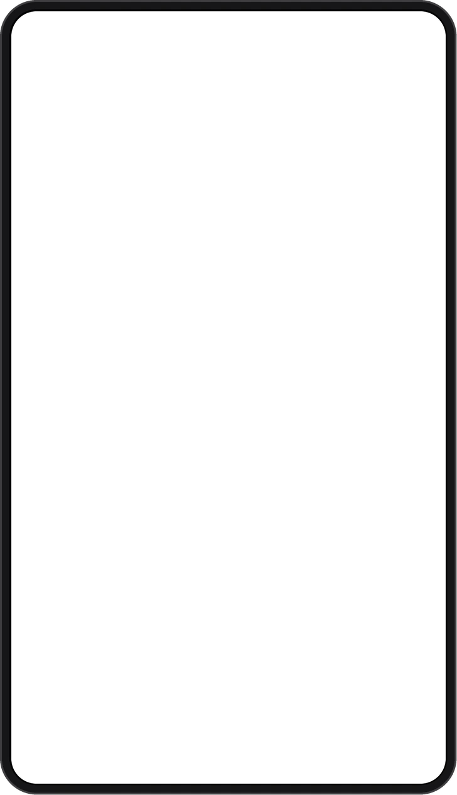
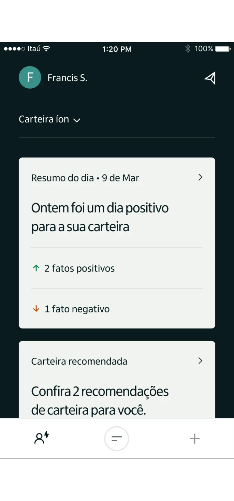
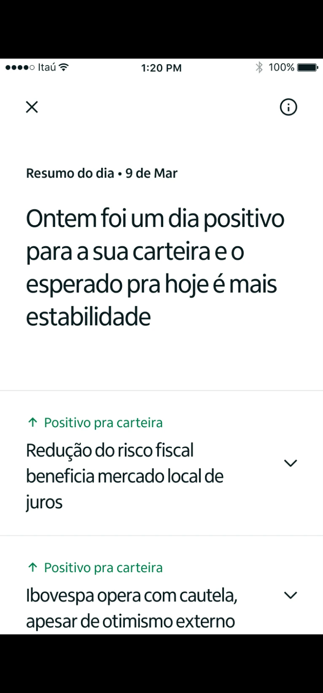

Íon Investments
Help customers to track and monitor their investments portfolio by themselves.
A portfolio tracking feature for íon investments, prototyped with Protopie. Three ideas: a daily report, a monthly report and a complete check-up of the portfolio.
Check up
Get a complete evaluation of your portfolio and receive recommendations to improve performance. It gives a score out of 100, rates profitability, liquidity, diversification and risk, and recommends a portfolio for your moment as you scroll.

Monthly report
Receive a monthly report with all past impacts on your portfolio. It opens with an intro and continues as you scroll.
Daily report
Receive a daily report with all the impacts your portfolio might suffer because of market changes.

